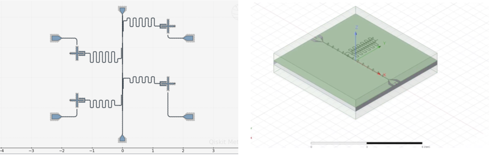

Abstract
The project describes the end-to-end development of a superconducting transmon qubit chip at Missouri S&T, aiming to establish a foundation for quantum hardware research at the university. The work encompasses the theoretical design, electromagnetic simulation, and an attempt to streamline an in-house fabrication pipeline. Utilizing the SQuaDDs and Qiskit Metal framework, a four-qubit architecture was designed with individual drive lines and readout resonators multiplexed onto a central feedline. Precision simulations in Ansys HFSS and Q3D validated the target Hamiltonian parameters, including a qubit frequency of ~4.23 GHz and an anharmonicity of ~350 MHz. Due to the absence of a cleanrom and limited fabrication resources, the chip did not yield, however the simulations were successful, thus paving the way for continued quantum devices research at Missouri S&T.
Objective
To design, fabricate and characterize a superconduting (transmon) qubit chip. This would further enable quantum device research for future students at S&T.
Methodology
Design and Parameter Selection:
- Targeted a qubit operating frequency in the 4–6 GHz range to avoid common microwave bands and ensure compatibility with dilution refrigerator thermal scales.
- Utilized Qiskit Metal's Hamiltonian tools to perform Cooper pair box analysis, inverting desired frequencies and anharmonicities into required charging energy (EC) and Josephson energy (EJ) values.
- Selected a "cross-shaped" shunt capacitor (X-mon) geometry to allow for multi-line coupling and minimize dielectric loss.
- Designed a four-qubit chip to mitigate fabrication variances, featuring staggered λ/4 CPW readout resonators for frequency-multiplexed readout.
Electromagnetic Simulation Workflow:
- Quasi-static Analysis: Used Ansys Q3D to extract the Maxwell capacitance matrix, verifying that the physical geometry yielded a total island capacitance of ~94.8 fF and an EC/h of ~204 MHz.
- Eigenmode Simulation: Conducted 3D simulations in Ansys HFSS to identify natural mode frequencies and field distributions, ensuring eigenmode convergence through adaptive mesh refinement.
- EPR Quantization: Applied the Energy Participation Ratio (EPR) method to process HFSS fields, determining the dispersive shift (χ), coupling strength (g), and the exact participation of the Josephson junction.
Fabrication and Infrastructure Development:
- Overlap Junction Process: Followed a double-lithography sequence for vertical Al/AlOx/Al junctions, which eliminates the need for a tilting stage required by traditional shadow evaporation.

Conclusion and Outlook
While the chip did not yield due to fabrication constraints, the chip was successfully simulated on HFSS.